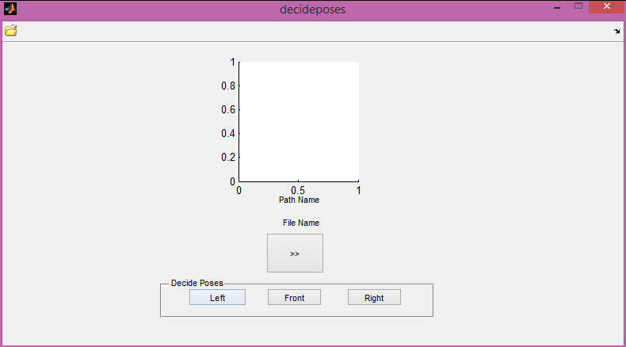

function varargout = decideposes(varargin) % DECIDEPOSES MATLAB code for decideposes.fig % DECIDEPOSES, by itself, creates a new DECIDEPOSES or raises the existing % singleton*. % % H = DECIDEPOSES returns the handle to a new DECIDEPOSES or the handle to % the existing singleton*. % % DECIDEPOSES('CALLBACK',hObject,eventData,handles,...) calls the local % function named CALLBACK in DECIDEPOSES.M with the given input arguments. % % DECIDEPOSES('Property','Value',...) creates a new DECIDEPOSES or raises the % existing singleton*. Starting from the left, property value pairs are % applied to the GUI before decideposes_OpeningFcn gets called. An % unrecognized property name or invalid value makes property application % stop. All inputs are passed to decideposes_OpeningFcn via varargin. % % *See GUI Options on GUIDE's Tools menu. Choose "GUI allows only one % instance to run (singleton)". % % See also: GUIDE, GUIDATA, GUIHANDLES % Edit the above text to modify the response to help decideposes % Last Modified by GUIDE v2.5 28-Jun-2016 03:54:45 % Begin initialization code - DO NOT EDIT gui_Singleton = 1; gui_State = struct('gui_Name', mfilename, ... 'gui_Singleton', gui_Singleton, ... 'gui_OpeningFcn', @decideposes_OpeningFcn, ... 'gui_OutputFcn', @decideposes_OutputFcn, ... 'gui_LayoutFcn', [] , ... 'gui_Callback', []); if nargin && ischar(varargin{1}) gui_State.gui_Callback = str2func(varargin{1}); end if nargout [varargout{1:nargout}] = gui_mainfcn(gui_State, varargin{:}); else gui_mainfcn(gui_State, varargin{:}); end % End initialization code - DO NOT EDIT % --- Executes just before decideposes is made visible. function decideposes_OpeningFcn(hObject, eventdata, handles, varargin) % This function has no output args, see OutputFcn. % hObject handle to figure % eventdata reserved - to be defined in a future version of MATLAB % handles structure with handles and user data (see GUIDATA) % varargin command line arguments to decideposes (see VARARGIN) % Choose default command line output for decideposes handles.output = hObject; % Update handles structure guidata(hObject, handles); set(handles.txt_filename, 'String', 'File Name'); set(handles.txt_pathname, 'String', 'Path Name'); % UIWAIT makes decideposes wait for user response (see UIRESUME) % uiwait(handles.figure1); % --- Outputs from this function are returned to the command line. function varargout = decideposes_OutputFcn(hObject, eventdata, handles) % varargout cell array for returning output args (see VARARGOUT); % hObject handle to figure % eventdata reserved - to be defined in a future version of MATLAB % handles structure with handles and user data (see GUIDATA) % Get default command line output from handles structure varargout{1} = handles.output; % --- Executes on button press in btn_left. function btn_left_Callback(hObject, eventdata, handles) % hObject handle to btn_left (see GCBO) % eventdata reserved - to be defined in a future version of MATLAB % handles structure with handles and user data (see GUIDATA) targetFolder = strcat(pwd,'\dataset\left'); toBeCopied = strcat(get(handles.txt_pathname, 'String'),get(handles.txt_filename, 'String')); copyfile(toBeCopied,targetFolder) % --- Executes on button press in btn_front. function btn_front_Callback(hObject, eventdata, handles) % hObject handle to btn_front (see GCBO) % eventdata reserved - to be defined in a future version of MATLAB % handles structure with handles and user data (see GUIDATA) targetFolder = strcat(pwd,'\dataset\front'); toBeCopied = strcat(get(handles.txt_pathname, 'String'),get(handles.txt_filename, 'String')); copyfile(toBeCopied,targetFolder) % --- Executes on button press in btn_right. function btn_right_Callback(hObject, eventdata, handles) % hObject handle to btn_right (see GCBO) % eventdata reserved - to be defined in a future version of MATLAB % handles structure with handles and user data (see GUIDATA) % handles.currentImage targetFolder = strcat(pwd,'\dataset\right'); toBeCopied = strcat(get(handles.txt_pathname, 'String'),get(handles.txt_filename, 'String')); copyfile(toBeCopied,targetFolder) % --- Executes on button press in btn_next. function btn_next_Callback(hObject, eventdata, handles) PathName = get(handles.txt_pathname,'String'); [nextFileName,nextInd] = getnextInd(PathName,get(handles.txt_filename,'String')) impath = strcat(PathName,nextFileName); im = imread(impath); set(handles.txt_filename, 'String', nextFileName); set(handles.txt_pathname, 'String', PathName); axes(handles.axes1); imshow(im); handles.currentImage = im; guidata(hObject,handles) % gatherAndUpdate(handles); % hObject handle to btn_next (see GCBO) % eventdata reserved - to be defined in a future version of MATLAB % handles structure with handles and user data (see GUIDATA) % -------------------------------------------------------------------- function openpic_ClickedCallback(hObject, eventdata, handles) % hObject handle to openpic (see GCBO) % eventdata reserved - to be defined in a future version of MATLAB % handles structure with handles and user data (see GUIDATA) FilterSpec = '../stackautoencoderforld3v1/stackautoencoderforld3v1/datasetstuff/*' ; [FileName,PathName] = uigetfile(FilterSpec) ; impath = strcat(PathName,FileName); im = imread(impath); set(handles.txt_filename, 'String', FileName); set(handles.txt_pathname, 'String', PathName); axes(handles.axes1); imshow(im); handles.currentImage = im; guidata(hObject,handles) function gatherAndUpdate(handles) gatheredData = gatherData(handles); updateAxes(handles.axes1,gatheredData); function gatheredData = gatherData(handles) gatheredData.imOnAxes = get(handles.axes1,'value'); function updateAxes (axesToUse,gd) axes(axesToUse) if gd.imOnAxes axes(gd) end function [nextIndName,nextInd] = getnextInd(dirpath,file) dirContent = dir(dirpath); fileNames = {dirContent(3:end).name}.'; currentIndex = find(strcmp(fileNames, file)); if currentIndex+1 ~= size(fileNames,1) nextInd = currentIndex+1; end nextIndName = fileNames{nextInd,1};